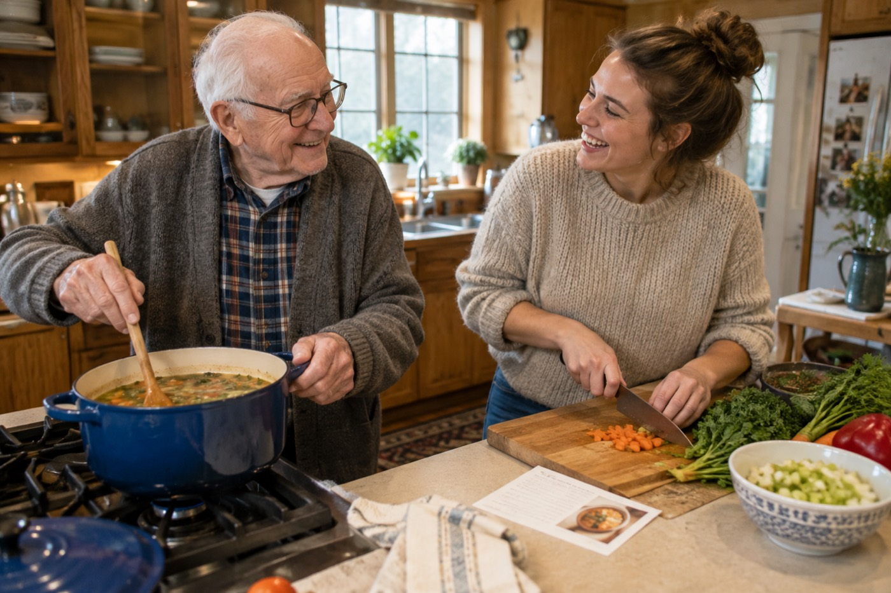
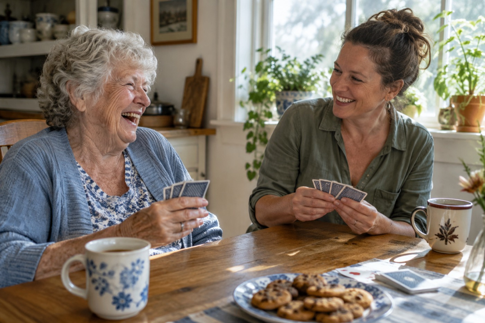

Friendly, local help for everyday life in Missouri.
Company, rides, errands and a helping hand from checked Neighbors in your community. $34 an hour. No contracts, ever.
- Background-checked
- Interviewed
- No contracts
Good company
Conversation, cards, walks and shared hobbies
Rides and errands
Doctor visits, groceries, the pharmacy and more
Light help at home
Simple meals, tidying, laundry and plants
Peace of mind
A short note from your Neighbor after every visit
A helping hand for your mom or dad. Peace of mind for you.
Use Show-Me Neighbors once in a while when you need a little help, or set up a weekly visit for steady company. Either way, someone kind and checked is stopping by, and you get a short note after every visit.
We are a Missouri company, starting in Springfield, Branson / Table Rock Lake and St. Charles County, and growing town by town. Every Neighbor lives close by.
The everyday help that makes a week go better
Neighbors are checked, everyday helpers from your own community: retirees, empty nesters, students, former teachers and caring people who live nearby. They are not nurses or aides. They are dependable adults who make daily life easier and bring real connection to your door.

Help at home
Need a few things knocked off the list?
- Making a simple meal together
- Light tidying and dishes
- Laundry and changing the sheets
- Watering plants
- Phones, tablets and the TV remote
- Small projects (no ladders or power tools)
A little help at home makes everyday routines easier, so your mom or dad can stay in the home they love.

Company and time together
A Neighbor can share a laugh and make an ordinary afternoon more fun.
- Coffee or a meal together
- Walks around the block
- Cards, games and puzzles
- Hobbies, crafts and old photos
- Video calls with family
- The library, a museum or a show
- Just good conversation
A regular Neighbor becomes a familiar face who knows your routines and favorite stories.
Errands and appointments
Some things are simply nicer with someone by your side.
- Rides to doctor visits
- Grocery shopping
- Pharmacy pickups
- The salon or barber
- Church, lunch out or visiting friends
- Post office and dry cleaning
- Goodwill drop-offs
Book one visit when something comes up, or set up a regular errand day with a Neighbor you know.
Neighbors help with everyday life, not personal or medical care. They do not help with bathing, dressing, using the bathroom, eating, medication or anything medical. If that kind of help is needed, we will point you to local home care options.
Families use Show-Me Neighbors in all kinds of ways
A few examples of how a Neighbor can fit into a week.
A daughter who works full time
She books two weekday visits for her mom. A Neighbor helps around the house, goes along to the store, and sends a note so she knows how the day went.
A dad who loves to cook but can no longer drive
A Neighbor takes him grocery shopping on Tuesdays, then helps him make one of his favorite recipes.
A mom who is 90 and still lives at home
Her son sets up three short visits a week for company, a walk and a little tidying. She stays in her own home, and he worries less.
A grandpa in a senior living community
He has meals and activities covered, but misses getting out. A weekly Neighbor takes him to lunch, the barber or his old church.
Is Show-Me Neighbors right for your family?
Answer six quick questions and we will tell you honestly whether a Neighbor is a good fit.
Three easy steps
Book and keep track of visits from any phone, tablet or computer. A family member can set it all up for a parent.
- 1
Tell us what you need
Who the help is for, where they live and what they enjoy.
- 2
Get matched with a Neighbor
Pick a day and time. A checked Neighbor nearby says yes, and you see their name and photo before they arrive.
- 3
Enjoy the visit
Get a short note after every visit. Favorite Neighbors get your next visits first. Change or cancel up to 24 hours ahead.
Trust comes first, before anyone rings your doorbell
Whether it is your home or your mom's, letting someone in is a big deal. Every Neighbor is chosen carefully and checked before their first visit.
How we choose Neighbors
- Application and screening questionsWe learn why they want to help and what they can do.
- A one-on-one video interviewWe meet every Neighbor face to face on a live video call before they are approved.
- Onboarding course and quizHow to be a good visitor, stay safe and spot when something is not right.
How we check them
- Criminal background checkSearched across all 50 states.
- Driving record checkBefore any Neighbor gives a ride.
- A visit note every timeNeighbors clock in and out in the app and leave a short note for the family.
Real neighbors, right here in your part of Missouri
Neighbors are retirees, empty nesters, students and friendly folks who live close by. They know the roads, the stores and the church parking lots, because they are from here too.
Simple hourly pricing. No contracts.
Pay only for the time you use. Your card is charged after each visit.
Weekdays
Monday to Friday, 8 am to 6 pm
Evenings and weekends
Weekdays after 6 pm, plus Saturday and Sunday
One visit, or the same time every week
| One visit | Weekly visits | |
|---|---|---|
| Checked, friendly Neighbors | Yes | Yes |
| 1-hour minimum, no contracts ever | Yes | Yes |
| Mark favorite Neighbors | Yes | Yes |
| Same day and time every week | -No | Yes |
| Your favorite Neighbor is offered your visits first | -No | Yes |
| A familiar face who knows your routines | -No | Yes |
- One hour minimum, then billed by the 5 minutes
- Book once, or set up visits every week
- Miles driven for rides and errands are added at the IRS mileage rate
- Change or cancel up to 24 hours ahead at no charge
- The person getting help is home for every visit
More ways to pay
Monthly plans
Prepay 4, 8 or 16 hours a month and save, down to $30 an hour. Change or end your plan any time.
Give visits as a gift
A gift card for Mom, Dad or a friend. Perfect for birthdays, holidays and Mother's Day.
Your employer may help
Some employers help pay for visits for their employees' parents. If yours gave you a code, add it in the app.
Have a kind heart and a few free hours?
Retirees, empty nesters, students and anyone who enjoys older adults. Choose your own hours and the visits you want, close to home.
- Set your own schedule
- Pick visits near you in the app
- Get paid every week
- Become someone's favorite person to see
Good questions we hear a lot
Is this home care?
No. Neighbors help with company, rides, errands and light help around the house. They do not give personal care like bathing or dressing, and they do not give medication or medical care. Neighbors never lift or carry anyone, so for rides you need to get in and out of the car on your own. If more help is needed, we will tell you honestly and point you to local home care options.
How can I help my mom or dad feel comfortable trying it?
Start with something small and specific, like a ride to the salon or a grocery run. Let them know they choose what kind of help they want and when. Many parents who were unsure at first end up looking forward to their Neighbor's visit.
Can I set up regular visits?
Yes. Book one visit when something comes up, or set up the same day and time every week. Mark a Neighbor as a favorite and your regular visits are offered to them first, so your parent sees a familiar face.
Does someone need to be home for the visit?
Yes. The person getting help needs to be home for every visit, and every visit includes some time together. A Neighbor can run errands as part of a visit, but will never go to an empty house.
What won't a Neighbor do?
Neighbors do a lot, but not everything. They never give hands-on or medical care: no bathing, dressing, grooming, help in the bathroom, brushing teeth, feeding, wound care, giving medication, or helping someone walk, stand or move from a bed or chair. They also skip jobs you would hire a professional for, like deep cleaning, yard work, using power tools, climbing ladders or lifting anything heavy. If you are not sure, just ask when you book.
Is this really for me? I am not sure I need that much help.
You do not have to need a lot to get a lot out of a little. Many people start with one visit a week: a ride to the store, coffee and a chat, or an extra pair of hands around the house. Start small and add more only if it helps.
Do I have to book a lot of hours?
No, never. Visits are at least one hour, then billed by the 5 minutes. Book once, or set up a regular weekly visit. There are no contracts and no minimum number of visits.
Who are the Neighbors?
Local people who enjoy older adults: retirees, empty nesters, students and neighbors with a few free hours. Every one passes a background check, a driving record check and a live video interview, and finishes our onboarding course before their first visit.
Can we choose our Neighbor?
You will see who accepted your visit, with their photo, before they arrive. After a visit you can mark that Neighbor as a favorite, and your future visits are offered to your favorites first. You can also tell us if you would like a man or a woman, and we only send Neighbors who fit.
Can I book for my mom or dad?
Yes. Many visits are booked by a son or daughter. You can book, see who is going and read the note after each visit, from wherever you live.
Do we have to use the app?
Yes, booking happens in the app or online. That is how we keep prices low and get you a Neighbor quickly. If you need a hand getting set up, a family member can do it for you.
What does it cost?
$34 an hour on weekdays from 8 am to 6 pm, and $38 an hour on evenings and weekends. Visits are at least one hour, then billed by the 5 minutes. Miles driven for rides and errands during the visit are added at the IRS mileage rate (76 cents a mile in 2026). We never charge for the Neighbor's drive to your home.
What if I need to cancel?
Change or cancel up to 24 hours before the visit at no charge. Cancelling with less notice is charged one hour, because your Neighbor has set that time aside for you.
Where are you?
We are starting in three areas at once: Springfield (with Nixa, Ozark and nearby towns), Branson and Table Rock Lake, and St. Charles County (St. Charles, St. Peters, O'Fallon, Wentzville and nearby). Next we plan to open more of St. Louis, Kansas City and Columbia, one area at a time. Make your free account below and we will tell you when we reach your neighborhood.
Do you need to come to our home first?
No. You sign up online or in the app, and there is no in-home visit to get started. We may give you a quick welcome call to answer questions.
Will the same Neighbor come every time?
Often, but not always. Neighbors set their own schedules. When you mark a Neighbor as a favorite, your visits are offered to them first, and if they are free, they will be there.
Can I ask for a visit today?
You can ask, but we cannot promise same-day visits. Booking a day or more ahead gives you the best chance of getting the Neighbor you want.
How do I pay?
Your card on file is charged after each visit. There is nothing to pay up front and nothing to sign. You can also use a monthly plan, a gift card or an employer code, and the app uses those first.
Do you take insurance?
No. Show-Me Neighbors is private pay only, because Neighbors give everyday help, not medical care.
Can a Neighbor take Mom to the doctor?
Yes. Choose "Doctor appointment companion" when you book. Your Neighbor drives there and back, walks in with her and keeps her company in the waiting room. Neighbors do not go over medical details, handle medicine or give any hands-on care.
We have a cat or a dog. Is that okay?
Of course. Just add your pets in the app. Some Neighbors are allergic, so we only offer your visits to Neighbors who are not.
Can I give visits as a gift?
Yes. Buy a gift card in the app and we email the code to them, or to you to print. It is added to their account as visit credit and used after each visit.
Can I tell you how a visit went?
Please do. After every visit you can rate it from 1 to 5 stars and add a note. Ratings go to our office, not the Neighbor, and we call you about anything less than great.
Can a Neighbor drive someone who uses a wheelchair?
Neighbors drive their own cars and do not have wheelchair vans. If your loved one uses a walker or a folding wheelchair and can get in and out of the car on their own, a Neighbor is happy to help.
How are Neighbors checked?
Every Neighbor fills out an application, has a one-on-one video interview, passes a criminal background check across all 50 states and a driving record check, and finishes our onboarding course before their first visit.
Make your free family account
We are opening in Springfield, Branson / Table Rock Lake and St. Charles County first. Make your account now and tell us a little about your loved one, so you are ready to book the day visits open.